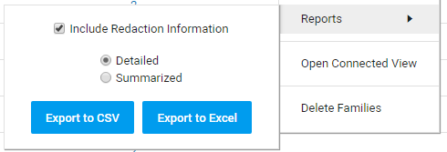

Tip: The report is generated faster if you select Flat List as the List Option.
To run a report on all or select documents in the Document List table, proceed with the instructions below. For more information on other reports you can run, see
Export the current Document List to a CSV or Excel file that can be used to generate reports.
First, add/remove columns, sort them, and save it as a View. If no documents are selected, all documents in the Document List will be exported and included in the report.
|
|
Tip: The report is generated faster if you select Flat List as the List Option. |
In Document List, select the Settings icon 

Select the check box 'Include Redaction Information' if you want to include redaction information
(on which page, who redacted it and when it was redacted, redaction/exemption code and justification).
All information of manual redactions is always added. However, when creating the report, all
auto redactions might have been processed already. As a result, for auto redactions, most fields can be
empty indicating that auto redaction will be performed on that document.
The export of redaction codes is available summarized (grouped per document) and detailed (full/exported per redaction) list:
An example of summarized redaction information:
ID,Name,RedactionCode, RedactionText
12321, Mydoc.doc, 10.a.3;10.a.4,
12322, Mydoc1.doc, 10.a.3;10.a.4, personal
12323, Mydoc2.doc, ,personal
After the report is created, an Audit entry will be created that includes the Query, Affected Documents, Affected Family, a Query Result Snapshot, Date, and User Account.